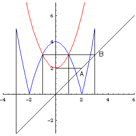

|  |
| Range of g is [2,infinity); domain of f is [-3,3]. |
| (Domain of f) intersect (Range of g) on the diagonal is AB. |
| Project AB horizontally to the graph of g. |
| x2 + 2 = 3 implies x = +/- 1. |
| Then project vertically to the x-axis. |
| The domain of f(g) is [-1, 1]. |
Return to Examples.